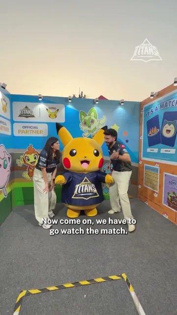
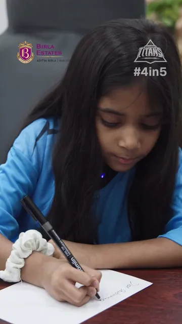
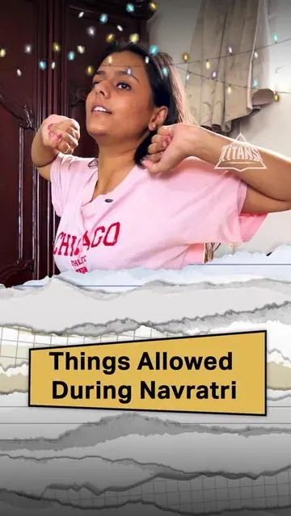
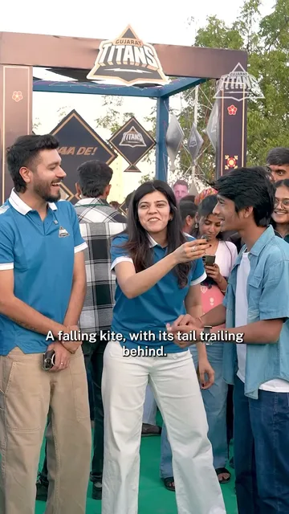
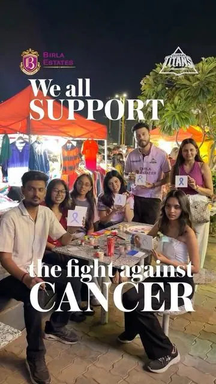
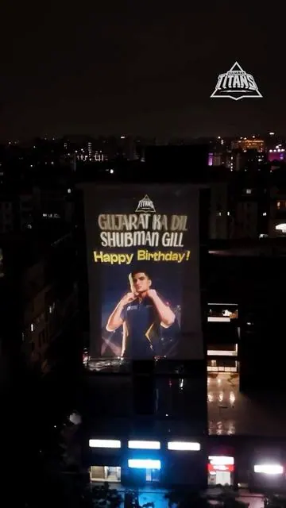
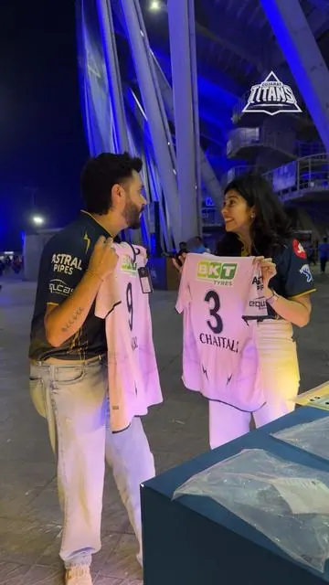
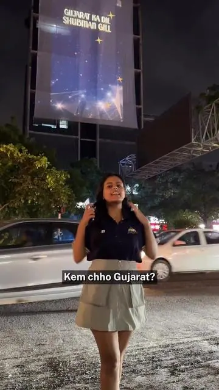
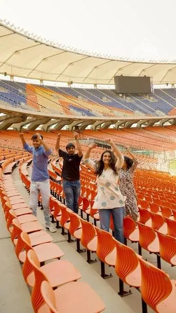

Gujarat Titans
Creative producer for Gujarat Titans across two IPL seasons. On set, my job was to make every script more engaging and more visual, and to get the shoot done on time.
The work for Gujarat Titans
Two IPL seasons as creative producer on Gujarat Titans. On set, I had one job: make each script more engaging and better on screen, then make sure the shoot happened on time, with the right people in the right location.
Junior Titans was a tour, 2 days in each city. Every city got a vox pop and a city video to hype the event. Some got a documentary too: Tangaliya weaving in Surendranagar, the tile factories of Morbi and the lok gayak of Amreli.
The crew was 1 drone operator, 1 iPhone shooter and 3 videographers. I was the producer and the iPhone shooter, ran production with Ohm, our production head, and gave the concepts for the city videos.
Facts
- Role
- Creative producer
- On set
- Scripts, visuals, people, locations, schedule
- Seasons
- 2
- Tour crew
- 1 drone operator, 1 iPhone shooter, 3 videographers
The films
This folder holds 96 films for Gujarat Titans, posted between Mar 2025 and May 2026. Together they have 83.1M views on Instagram. The most watched one has 3.1M, posted on 1 May 2026.
The 12 most watched

Gujarat Titans reel1 May 2026, 3.1M views
Gujarat Titans reel25 May 2026, 2.2M views- Gujarat Titans reel30 Sep 2025, 2.2M views

Gujarat Titans reel26 Sep 2025, 2.2M views- Gujarat Titans reel8 Sep 2025, 2.1M views

Gujarat Titans reel14 Jan 2026, 2.1M views
Gujarat Titans reel11 May 2026, 2M views
Gujarat Titans reel7 Sep 2025, 1.8M views
Gujarat Titans reel12 May 2026, 1.7M views- Gujarat Titans reel16 Dec 2025, 1.7M views

Gujarat Titans reel8 Sep 2025, 1.6M views
Gujarat Titans reel15 Mar 2025, 1.6M views
The other 84 are in the Gujarat Titans folder on the full site.
More media work
I also build software. See the software projects, or go back to Kirtan Purohit's home page.